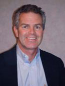

About Dr. Conahan
Dr. Jim Conahan, M.D. is a Board Certified Ophthalmologist, voted Denver’s Top Ophthalmologist in 5280 Magazine by his peers in medicine. He has advanced training in refractive surgery and micro-surgery of the eye. He lives in Highlands Ranch with his wife, Molly, and their three children.
Dr. Conahan’s Patient Philosophy
The Priority of the Patient
Having experienced the “miracle” of Laser Vision Correction myself, I can speak as both surgeon and patient. I understand how frightening any type of surgery can be which is why it is my goal to be your advocate throughout the entire process of Laser Vision Correction. I want you to feel comfortable with your options, and I will be happy to answer all of your questions and concerns. From the preoperative testing period all the way through your postoperative period and beyond, I will personally be involved. I want you to feel calm and at ease as you and I journey toward obtaining your personal best vision.
Dedication to Excellence
In a field that is as technologically advanced as Laser Vision Correction, it is essential that myself as well as my staff stay abreast of the latest innovations and trainings offered to us. I now offer iLasik, the next generation in laser vision Correction. iLasik is 100% blade free, Custom View procedure that uses lasers in both steps of the Lasik process. I have received specialized training and have been certified in the use of the VISX laser. My staff has been thoroughly trained to answer your questions, and to work with me to obtain your personal best vision.
Giving Back
Since he started practice Dr. Conahan has always believed that it was a privilege and a gift to be able to give sight to the blinded poor of the world. Through his volunteer work in Mante, Mexico he has performed well over 1000 free cataract surgeries.
In 2006, he and his wife Molly formed a nonprofit organization called "The Mission of Healing Eye". Their mission seeks to bring free medical and surgical eye care to the blinded poor Zihutanuejo, Mexico and Battenbang, Cambodia. Since starting their mission Dr. Conahan and his volunteers have done over 1800 cataract surgeries, seen 10,000 people in the eye clinic, and distributed 10,000 pairs of glasses.
His wife Molly is the mission's administrator who uses volunteers — particularly teens, to get involved in getting back to the poor of the world. This mission has become their passion. It fills the cup, and is a true blessing.
To learn more about the Mission of Healing Eyes go to the website www.healingeyes.webs.com